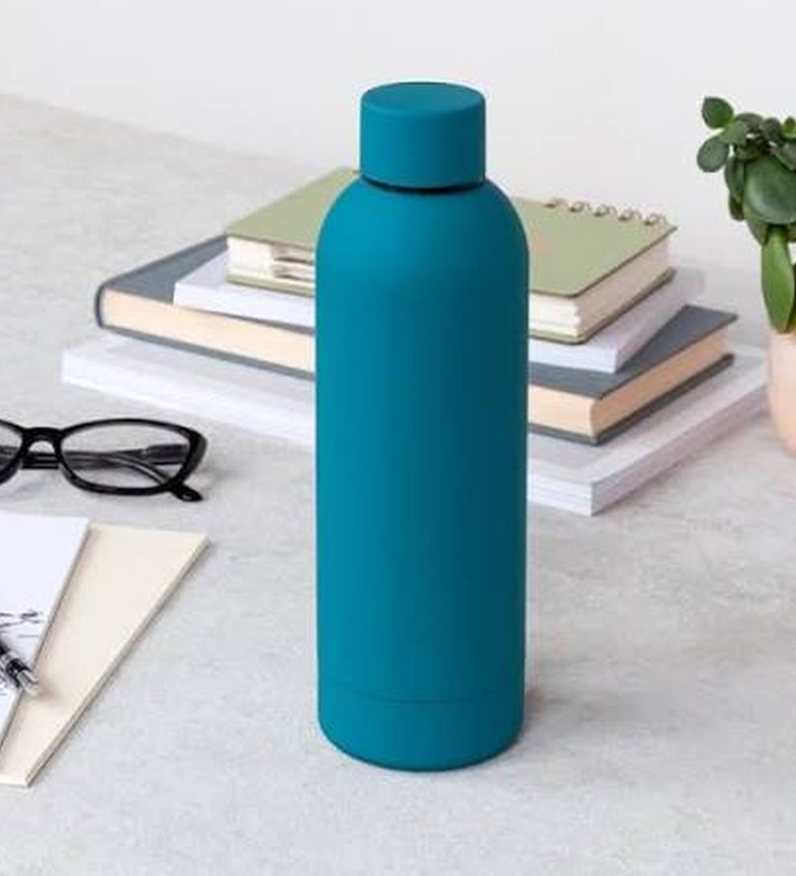

Wash daily
Rinse after each use and wash with warm soapy water. A bottle brush reaches the bottom and the neck.
Glass, plastic, stainless steel or rubber? Learn how each one works, what it's good at, and which one suits how you live.

Tap a type to see what it does best and where it falls short.
We'll recommend the bottle type that matches your day.
Two picks in each type, chosen for different needs.
Ratings are out of 5 and describe typical bottles of each type.
A few habits make any bottle last longer and taste better.
Rinse after each use and wash with warm soapy water. A bottle brush reaches the bottom and the neck.
Let the bottle air-dry upside down with the lid off. Trapped moisture is what causes smells.
Soak in a mix of warm water and white vinegar or baking soda, then rinse well.
Seals and straws collect residue. Take them apart and clean them, and replace worn gaskets.